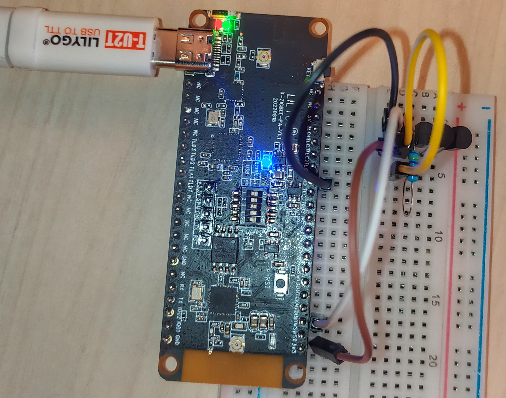

A zigbee router device. esp32-c3 controls zigbee behavior via zbhci.
Select one of the T-ZigBee as the zigbee gateway, and program the program zigbee2mqtt. And follow the documentation for related configuration.
If you are running Home Assistant OS or a Supervised Home Assistant instance the easiest way to install Zigbee2MQTT is via the addon. Instructions on how to install it can be found here.
Select T-ZigBee as the node. Do the following.
Connect the T-Zigbee board with DS18B20 sensor(s)

Adjust the DIP switch:
Need to upgrade the firmware of TLSR8258 to hciDevice_ZR_8258_SDK_eb644f1_MD5_3e7c395bacca28475952808a79ff2ec1.bin
Adjust the DIP switch:
Upload the ds18b20.ino sketch after installing DS18B20 library from Arduino Library Manager or platformio Libraries menu.
Double-click the button on the upper side of the gateway to open the device join mode. Open successfully. The green led will be constant.

Press and hold the button on the top of the node device for 3 seconds to start pairing. The green led will be constant, indicating that the pairing is complete.
Zigbee2MQTT addon has a built-in webbased frontend. You can pair the device by clicking permit join button on the web before above pairing action on the board.


Add this external converter MIKE.ESP32-C3.js to Zigbee2MQTT config directory as to this procedure and then join the device.
You can show the device on the sumenus of Zigbee2MQTT.
Double-click the button on the upper side of the board to turn on/off automatic periodic reporting task.